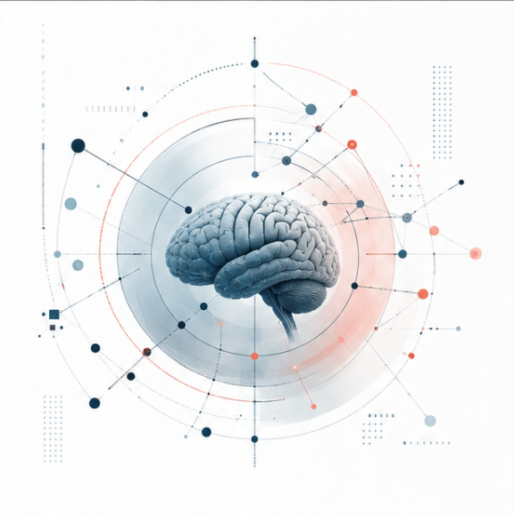
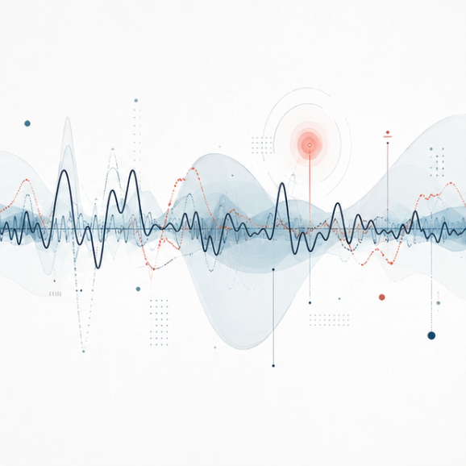
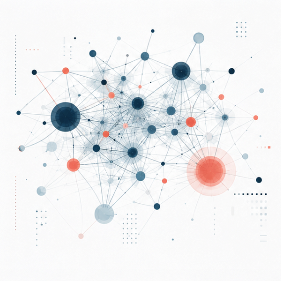
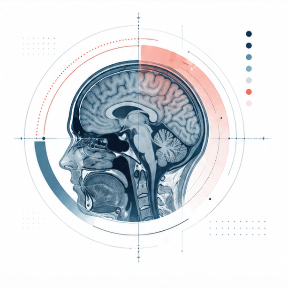

Background
Psychology and Neuropsychology
Neuropsychology · Biomedical Engineering · Research
Psychologist, neuropsychologist and Biomedical Engineering student exploring how neuroscience, engineering and artificial intelligence can transform the future of brain health.
01
About
My work sits at the intersection of neuropsychology, neuroscience and technology.
Clinical practice informs the questions I ask. Engineering expands the ways I can investigate them.
I am a psychologist and neuropsychologist with professional experience in cognitive assessment, dementia and clinical care.
My clinical work has taught me to look beyond scores and diagnoses, and to understand cognitive functioning within the wider context of a person’s history, environment and everyday life.
Alongside my professional practice, I am studying Biomedical Engineering to deepen my understanding of biological systems, medical devices, data and artificial intelligence.
I am particularly interested in how interdisciplinary research can contribute to earlier detection, more precise assessment and more personalised approaches to brain health.
Background
Psychology and Neuropsychology
Currently studying
Biomedical Engineering
Primary focus
Brain health, medical technology, neuroimaging, artificial intelligence and cognitive assessment
Approach
Clinical, interdisciplinary and research-oriented
02
Research interests
My interests connect clinical observation with emerging tools from neuroscience, engineering and computation.

How can cognitive assessment become more precise without losing the clinical meaning of a person’s history, environment and everyday functioning?

How can medical devices and digital tools support prevention, assessment and neurological care?

How can artificial intelligence contribute to clinical reasoning while remaining transparent, responsible and human-centred?

How can imaging, physiological and biological data contribute to earlier and more individualised detection of neurological change?
03
Projects
A growing archive of academic work, clinical thinking and computational experiments across brain health and engineering.
Biomedical Engineering
A curated collection of selected academic work, technical exercises and reflections developed throughout my Biomedical Engineering degree.
Explore projectNeuropsychology
A structured exploration of neuropsychological assessment, interpretation and the communication of cognitive findings.
Explore projectData and AI
Small computational projects exploring data visualisation, Python, biomedical signals and responsible artificial intelligence.
Explore project04
Writing and publications
Writing is part of how I organise questions, connect disciplines and make complex ideas clearer.
This section will include scientific publications, selected professional writing and notes about neuroscience, neuropsychology, engineering and technology.
Contact
I am interested in conversations and collaborations related to neuropsychology, neuroscience, biomedical engineering, medical technology and brain health research.
contact@carolinasanchezgirona.com